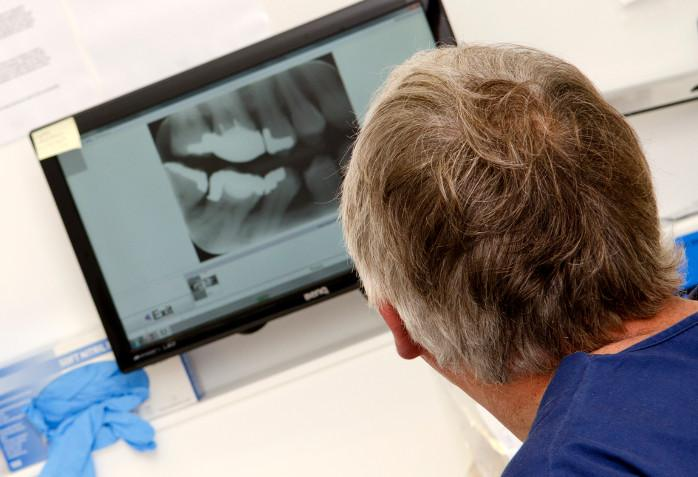
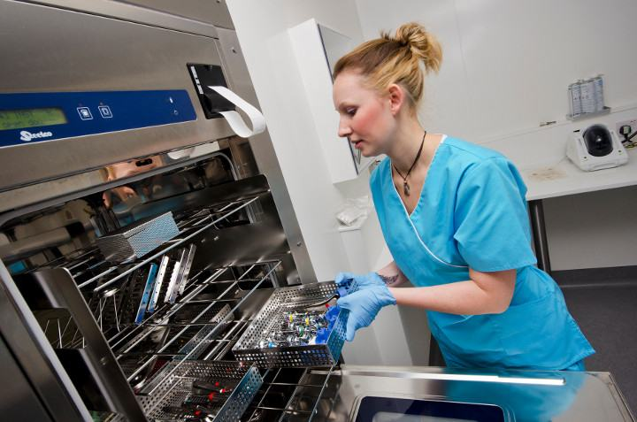
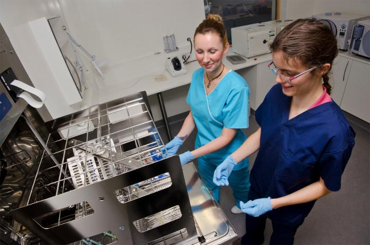

See inside our practice
These are real photos of our practice, in the order you’ll see each place. Knowing what to expect can make your visit feel easier.
Your visit
From the car park to the chair
Go straight to the part you want to see.
-
Step 1 of 6
Arriving

This is the Pat Gifford Building. You can park in front of it. 
Look for this sign on the timber wall. We’re in the Pat Gifford Building on the High Street in Prestonpans, next to Lidl. It’s the tall building with pale wooden walls.
- Free parking in front of the building.
- By bus: we’re on a main bus route, close to a bus stop.
- Step-free access and disabled parking: phone to check before you come.
-
Step 2 of 6
Reception and the waiting area

Give your name at this desk when you arrive. Check in at the reception desk. Then take a seat in the waiting area until you’re called.
- A large, comfortable waiting area.
- Baby changing and a place to feed your baby.
- Art on the walls by local art groups and clubs.
Feeling nervous? Tell us when you book or when you arrive. The more we know, the more we can help.
-
Step 3 of 6
The treatment room

One of our 10 treatment rooms, from our video tour. 
X-rays are digital. You can see them on screen. When it’s your turn, you’re called through to a treatment room. The chair tilts back so the dentist can see your teeth.
- All 10 treatment rooms have digital x-rays.
- Your dentist explains what they find and what can be done, and answers your questions.
- You can choose to stop at any stage.
The General Dental Council (GDC) expects every dentist to explain your options and get your consent before treatment.
Agree a “stop” signal NHS inform advises agreeing a signal with your dentist, such as raising your hand, for when you want the treatment to stop.
Watch our video tour on YouTube -
Step 4 of 6
Where instruments are cleaned

A dental nurse loads used instruments into the washer. 
Instruments are cleaned and sterilised in this room. You won’t go into this room, but it’s part of every visit. Instruments are cleaned and sterilised here, away from the treatment rooms.
- Our own sterilising room for instruments.
- A dental laboratory on site for making dentures.
-
Step 5 of 6
The people you’ll meet
You’ll see a receptionist, a dentist and a dental nurse. These are our dentists, orthodontist and practice managers.
 Charles CrummeyPrincipal dentist
Charles CrummeyPrincipal dentist Pradeep ChintaPrincipal dentist
Pradeep ChintaPrincipal dentist Pauline Stanhope-JonesDentist
Pauline Stanhope-JonesDentist Vivienne KeenanDentist
Vivienne KeenanDentist Dimitra PissaDentist
Dimitra PissaDentist Nirmal ShahDentist
Nirmal ShahDentist Ramsay YoungDentist
Ramsay YoungDentist Matthew TaylorDentist
Matthew TaylorDentist Andrew TetleyDentist
Andrew TetleyDentist Rory BurnsDentist
Rory BurnsDentist Scott CalvertDentist
Scott CalvertDentist Dr Jenny AsquithOrthodontist (braces)
Dr Jenny AsquithOrthodontist (braces) Anne WylliePractice manager
Anne WylliePractice manager Lesley GemmellPractice manager
Lesley GemmellPractice manager
-
Step 6 of 6
After your visit
- A written estimate. If you need treatment, we give you a printed estimate of what it will cost.
- Your treatment plan. You can go through it at a pace that suits you.
- Your next check-up. Your dentist decides when you need it, based on your needs. It can be anything from under 6 months to 2 years (NHS inform).
- Can’t come? Give us at least 24 hours’ notice. If you give less, we may charge for the time.
Getting here
Parking, buses and access
Phone us before you come if you need help getting in.
Find us
- Family Dental Care East Lothian
The Pat Gifford Building, High Street
Prestonpans EH32 9BF - Next to Lidl. Free parking in front of the building.
- On a main bus route, close to a bus stop.
Access
- Step-free access and disabled parking: phone to check.
- Baby changing and a place to feed your baby.
- A large waiting area with seats.
Feeling nervous
If you feel nervous about the dentist
Most people feel a bit anxious about the dentist. You’re not alone, and you can tell us.
What we do
How we help
- We take time to explain what’s happening.
- You can choose to stop at any stage.
- We answer your questions before we start.
- Your treatment can go at a pace that suits you.
NHS advice
Things that can help
- Tell your dentist how you feel, so you can work together.
- Agree a signal for when you want to stop.
- Try breathing and relaxation exercises.
- Bring headphones and listen to music.
- Ask the dental nurse to talk with you or sit with you.